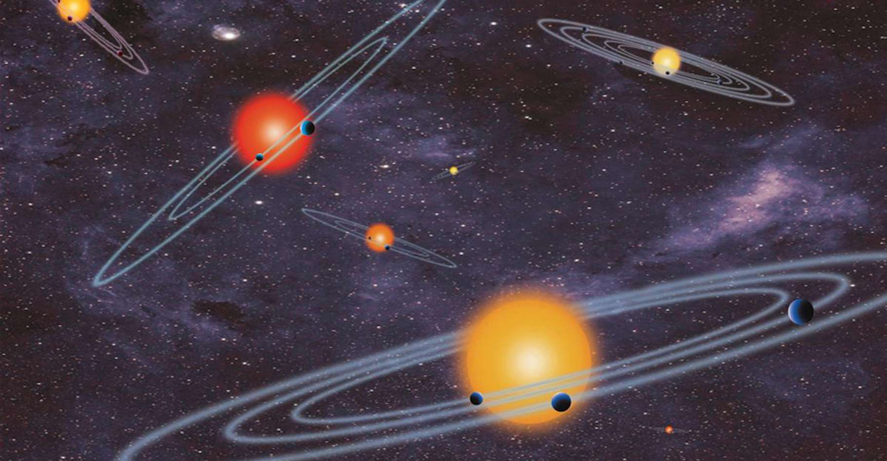

Ces trois exoplanètes sont en réalité… des étoiles !
En 1995, des astronomes annonçaient avoir
débusqué une planète en orbite autour d'une étoile autre que notre Soleil.
Un coup de tonnerre ! Depuis, les scientifiques en ont découvert
beaucoup d'autres. Environ 5.000 dans notre Galaxie. Et sans doute
plutôt 5.000 moins 3 - voire moins 4. Car des chercheurs du Massachusetts
Institute of Technology (MIT, États-Unis) rapportent aujourd'hui que trois
exoplanètes, et peut-être même quatre, identifiées grâce au télescope spatial
Kepler sont en réalité plus vraisemblablement de toutes petites étoiles.
Rappelons en effet qu'il existe une
limite de masse qui permet de distinguer
une planète d'une étoile. « Deux fois la masse
de Jupiter, ça commence à être suspect », commente Prajwam Niraula,
l'auteur principal de l'étude, dans un communiqué du MIT. Car au-dessus
de cette masse, la température et la pression au cœur de
l'objet deviennent telles que des réactions de fusion nucléaire
sont initiées. Une étoile s'allume alors. Évaluer la taille et la masse
d'un objet apparaît donc crucial pour le confirmer comme exoplanète.

Ce qui a mis la puce à l'oreille des astronomes du MIT, c'est d'abord un signal
étrange renvoyé par Kepler-854b. Ce qu'ils cherchaient, alors, c'était à identifier
des systèmes présentant des signes de distorsion de marée - ce qui se produit
lorsque l'attraction gravitationnelle d'un objet donne à un autre, proche de lui,
la forme d'un œuf. « Cela donne une idée de la masse du plus petit des objets en question »,
précise Prajwam Niraula. C'est ainsi qu'il est littéralement tombé sur Kepler-854b.
« L'objet présente un signal ellipsoïdal énorme. Assez immédiatement nous avons su que
cela ne pouvait pas provenir d'une planète », explique Avi Shporer, chercheur au MIT.
Alors l'équipe a procédé à quelques vérifications. Quand Kepler-854b a été identifiée, en 2016,
les données stellaires disponibles n'étaient pas aussi précises que celles dont nous disposons
aujourd'hui notamment grâce à la mission Gaia. La taille de l'objet a été estimée en
fonction de celle alors connue de son étoile hôte. Par la méthode des transits. Elle
consiste à déterminer la taille d'un objet à partir de la baisse de luminosité enregistrée
pour l'étoile en arrière-plan. Mais les nouvelles données à disposition des astronomes
montrent désormais que Kepler-854b atteint une taille de l'ordre de trois fois celle
de Jupiter. « Il est impossible que l'univers puisse créer une planète de cette taille »,
assure Avi Shporer. Celle que l'on pensait être une exoplanète n'est en réalité
autre qu'une petite étoile en orbite autour d'une plus grosse.
La surprise passée, les chercheurs ont voulu savoir s'il y avait,
dans le catalogue des exoplanètes, d'autres possibles erreurs de
la sorte. Pour avoir la réponse, ils sont partis en quête d'étoiles
dont la taille a été revue grâce aux mesures de la mission Gaia. Ils
en ont trouvé trois. Avec des supposées planètes en orbite qui finalement,
affichent une taille comprise entre deux et quatre fois la taille de Jupiter.
Kepler-840b et Kepler-699b ont quitté les rangs des exoplanètes pour rejoindre
ceux des petites étoiles.
Le doute persiste pour Kepler-747b. La taille de l'objet a en effet
été réévaluée à 1,8 fois celle de Jupiter. Proche donc de la fameuse limite
étoile/planète. Mais penchant a priori plus du côté exoplanète. Pourtant,
les astronomes notent que Kepler-747b orbite très loin de sa supposée étoile hôte.
Trop loin pour être une planète aussi grosse.
Les corrections apportées par les chercheurs du MIT vont servir,
notamment à ceux qui s'appuient sur la liste des exoplanètes pour étudier
la population dans son ensemble. Pour leur assurer des résultats corrects,
mieux vaut éviter les intrus. Mais que des « faux positifs » se glissent dans
les données devrait arriver de moins en moins souvent, nous assurent-ils. Grâce
à une sensibilité des instruments qui ne cesse de progresser.